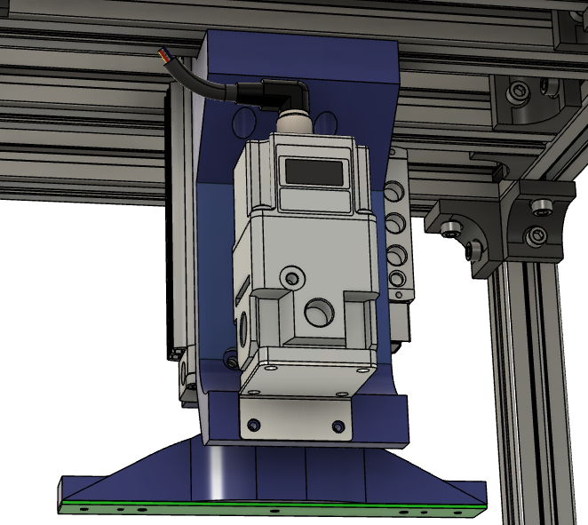

This project consists on the design of a force control system, used to apply a specific clamping force to a PCB. Additional to the control system, it also involved the design of a system for data logging, plotting, reporting, and an HMI touch interface development.

The force control applies a specific force to a PCB to make a variety of measurements, using a state machine to manage all the steps from user input to clamping and measuring. This force has to comply with restrictions to simulate real use conditions of the PCB, for which the device uses force sensors and circuits used for signal conditioning, a microcontroller, and pneumatic SCADA (PLC/SPS) equipment such as actuators, flow regulators, and valves.
The data logging and reporting system creates a data base with the sensors' and other data sent from the microcontroller to a centralized PC, where a report is automatically updated, creating predefined and customized plots.
An HMI was added to the device using an intuitive interface for the use of an operator. The HMI shares data in both directions with the microcontroller, enabling not only control and useful measuring data from the device, but also allowing emergency states and calibration or configuration of the device.

Tools and skills
- Microcontroller programming through the Arduino platform and C++ coding.
- Signal conditioning through both hardware and software for the force sensors
- SCADA logic (PLC/SPS) through custom code in the microcontroller
- Python programming and HTML for the microcontroller-computer communication, data base creation and reports generation.
- HMI hardware and software configuration through OEM tools.
- Fusion360 for the hardware assembly.
- PCB circuit design, CAD generation, assembly and soldering, tested and validated.
- Documentation and creation of an specifications table.